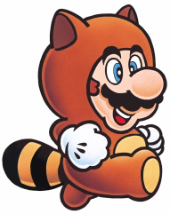

The tanooki, or Japanese racoon dog, though a member of the canine family is actually neither racoon nor dog, but a member of its own subspecies "procyonoides viverrinus". It's diet consists mainly of mushrooms, leaves and flowers. Native to Japan they can also be found in eastern Asia and some parts of Europe. For centuries tanooki have been a prominant figure in much Japanese folklore and are said to be masters of blending in with their surroundings. This is most likely due to their natural defense mechanism of turning into a statue when they feel threatened by predators. When sensing danger the tanooki instantly transforms its body into a solid stone statue until it feels that all is once again safe. It is not known how long they are able to maintain this form
but while in this state they are completly imume to any attacks from hostile adversaries. In the past, due to claims of mystical shape shifting abitlies the tanooki were at one point hunted to near extinction by fanatics hoping to wear their hides and inherit their magical powers. Thankfully today this is no longer the case as we understand the science behind their abilities and they are once again thriving happily in the wild.